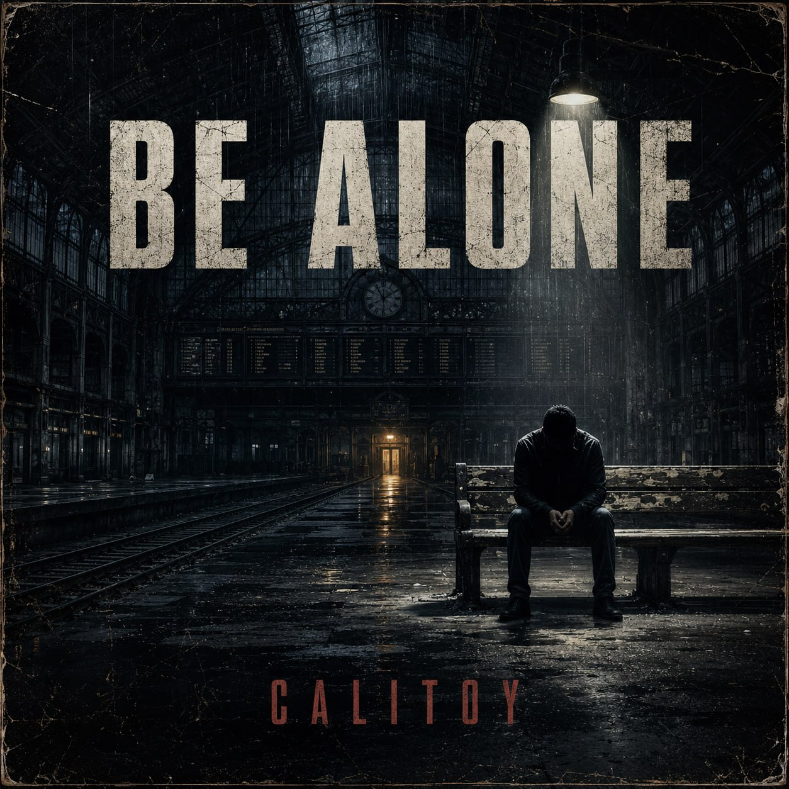
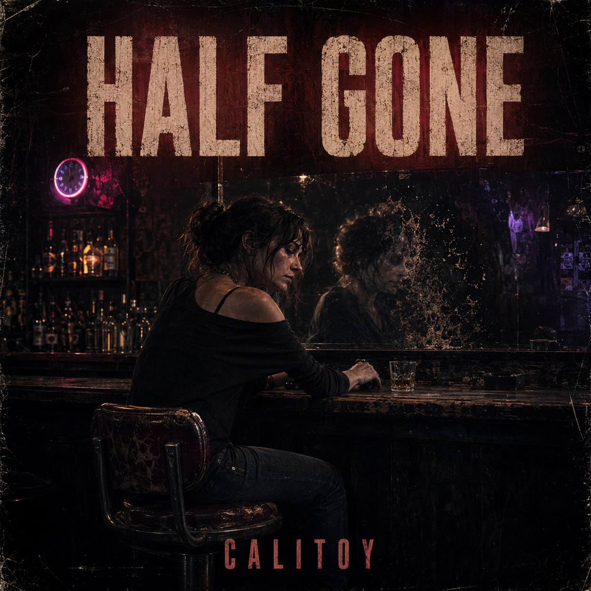
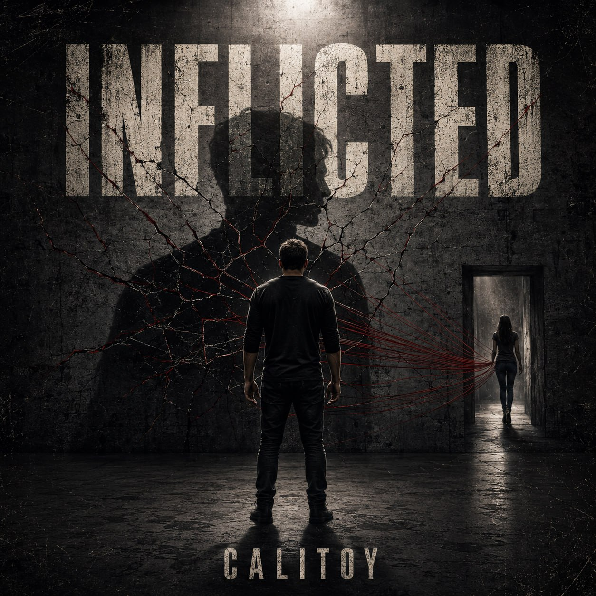
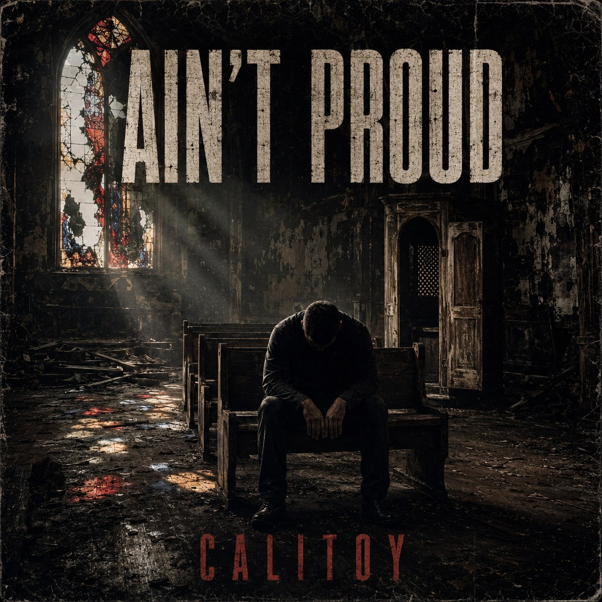

01
Home From Your Shadows
The lead visual statement: haunted, cinematic, and built like the doorway into the full album world.
Joseph Calitoy presents
Led by Home From Your Shadows, XCalitoy opens as a dark, cinematic album world built around pressure, isolation, grief, defiance, and survival.
Visual chapter previews
These pieces set the tone for the debut: stark, distressed, haunted, defiant, and emotionally direct.




Songs in the rollout
01
The lead visual statement: haunted, cinematic, and built like the doorway into the full album world.
02
The opening emotional posture: stripped down, cold, and heavy with isolation.
03
A portrait of emotional erosion, late-night damage, and the aftermath of being emptied out.
04
Confrontation, shadow, and consequence — the interior violence of carrying what was done and what was chosen.
05
The album's broken confession: bruised pride, collapse, and the cost of still standing.
06
The most explosive title in the revealed set — urgency, pressure, and full emotional overload.
About the era
XCalitoy marks a reset for the site and for Joseph Calitoy's public-facing identity. The homepage is now built to establish the debut album, the visual language, and the emotional weight behind the project.
Consulting can still exist later, but it should not compete with the album launch story at the top of the page.
“XCalitoy isn't background branding. It's the front door now.”
Contact
Reach Joseph directly for album inquiries, rollout opportunities, creative partnerships, media, or release conversation.